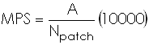

r.li.mps
(mean patch size) calculates the mean size of the patches in the sampling area as:

with:
A:sampling area size without null cells
Npatch: number of patches
EXAMPLES
To calculate mean path size index on map my_map, using
my_conf configuration file and saving results in
my_out file run:
r.li.mps input=my_map conf=my_conf output=my_out
NOTES
Do not use absolute path names for output files. They are raster if
moving window disposition was selected, otherwise they are in
~/.r.li/output folder.
If input raster is full of null values r.li.mps returns 0.
If you want to have null values instead run